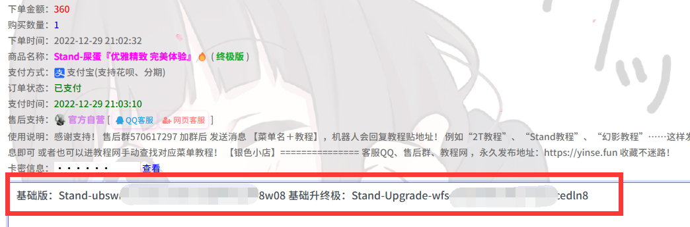
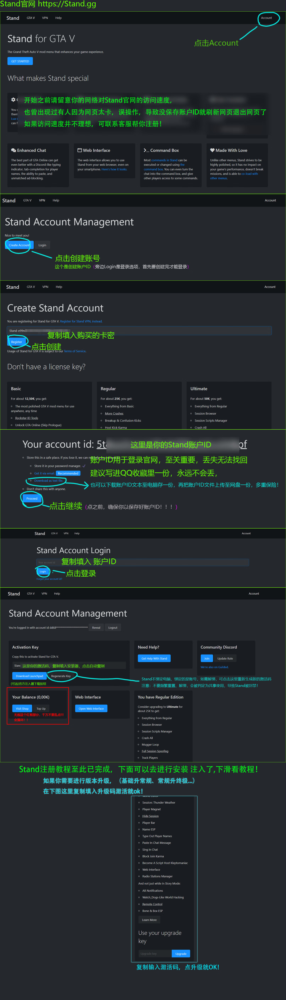
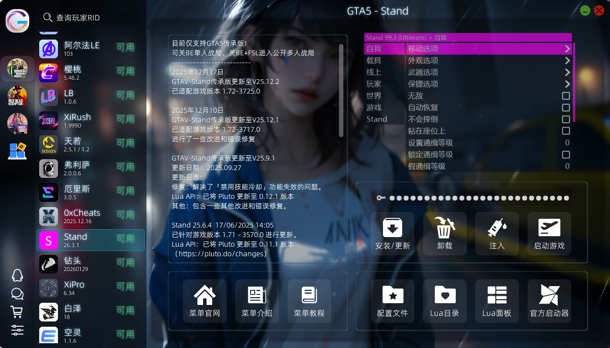

Stand 使用教程
前言
在这之前呢，我多说一句！ “大哥，，注意注意，已经有很多大哥没仔细看教程，操作失误。导致不可逆转的错误，最后白买了，打了水漂..” “我也很难受，比自己丢了钱还心痛，这里别嫌我啰嗦” “自己去官网创建注册时候，请 务必！务必！务必！仔细！仔细！仔细！看下面教程操作。不要漏掉任何文字！” 其实也不难的！非常详细，一看就会 如果没有把握， 可以联系我，我可以替你（当然免费）创建激活，并编辑好给你 联系方式访问 银色小店 重要信息建议写入QQ收藏，永远丢不了！同时也可以别的地方多备份几份，
——2022年8月10日
创建账户ID
激活码卡密说明
- 注册任何菜单的账号密码与游戏内的完全无关,选适合你的独一无二的好记的,不建议账号密码都输入QQ号等很容易被盗的信息
- 注册任何菜单最好只使用
数字 + 字母组合, 长度在 8 位以上,尤其不要输入中文空格与中文符号, 且极少数菜单不支持英文符号 - 请
自行保管好所有相关的激活码/卡密/账号信息,请勿泄露,部分菜单没有找回密码服务,且本店没有提供相关代管业务的义务 (暂存/只是给大家的福利,请不要依赖此服务),丢失相关数据导致的任何后果自行承担 - 注册激活后,你账户的解释权归此软件开发团队所有,与我无关,请严格遵守规则 (部分需要我帮忙处理的比如更换机器码,属于附加福利的一种,因本店属于代购性质,请尽量自助完成),违反软件规则导致的任何后果自行承担 (如绝大部分菜单禁止分享/二手处理账户)
你购买到的Stand激活码说明： 请认真仔细查看

如果你购买后发给你的卡密是这种格式， 有基础版 + 基础升终极 ，这种配有升级Key的你购买的激活码格式如上图,非基础版用户创建ID后请继续查看升级教程
- 基础版
- 常规版/终极版
- 升级码
基础版的激活码是：Stand-***********xxxxxxxx
格式是Stand-后面的一大堆英文
这种激活码,你按照下方教程创建账号ID与复制注入码正常注入即可
常规版/终极版 类型1的激活码是：
基础版：
Stand-skcheatsxxxxxxxx基础升常规/终极：Stand-Upgrade-skcheatsxxxxxxxx
这种激活码分两个部分,为了区分：
蓝色的是创建ID的基础版激活码紫色的是升级到你购买的常规版/终极版的升级码
如果你购买到的激活码类型是这个,你需要在创建ID后,查看最下方的升级教程,将你的基础版升级成常规版或者终极版
常规版/终极版 类型2的激活码是：Stand-***********xxxxxxxx
格式是Stand-后面的一大堆英文
这种激活码,你按照下方教程创建账号ID与复制注入码正常注入即可
无需重复升级的步骤,创建ID后你复制注入码注入就是常规版/终极版
终极版 类型3的激活码是：Stand-***********xxxxxxxx
常规版：
Stand-skcheatsxxxxxxxx常规升终极：Stand-Upgrade-skcheatsxxxxxxxx
这种激活码分两个部分,为了区分：
蓝色的是创建ID的常规版激活码紫色的是升级到你购买的常规版/终极版的升级码
如果你购买到的激活码类型是这个,你需要在创建ID后,查看最下方的升级教程,将你的基础版升级成常规版或者终极版
基础升常规/常规升终极/基础升终极的激活码是：Stand-***********xxxxxxxx
格式是Stand-Upgrade后面的一大堆英文
这种激活码,你按照下方升级教程在Stand官网登录你的账户ID后升级正常注入即可
开始注册
禁止使用浏览器网页翻译(使用后账户ID无法正常显示)
请严格按照以下教程操作,在不看教程的前提下误操作所导致的不可逆转的错误,皆由使用者自己承担!
请勿使用网页翻译
请严格按照以下教程操作,在不看教程的前提下误操作所导致的不可逆转的错误,皆由使用者自己承担!
创建按钮点一下就行,切勿重复点,点一下等网页做出反应,如果你不停的点,会导致无法跳转到账户ID界面若造成损失,请自行承担
进入Stand官网 Create Account | Stand
点击链接进入官网后,如下图操作

- 发送广告/刷屏:
使用Stand发广告语/高频发公屏消息/或者使用广告机时注入Stand- 禁止使用
线上-聊天选项中的信息轰炸- 账户共享/倒卖:
Stand网页账户共享/共享账户ID/倒卖二手等- 恶意行为:
在游戏中滥用菜单,例如对其他玩家进行任意崩溃或无缘无故过度踢出- 逆向工程:
不得尝试对 Stand 进行逆向工程或尝试将调试器附加到注入Stand上方所有操作皆由用户自行承担后果,有异议请自行联系Stand管理员上述.
Stand官网规则：
升级(基础版用户不需要看这个)
点击进入官网并登录Stand账户ID

输入升级key,然后点击 UPGRADE
然后复制注入码,重新注入即可
菜单状态
必备环境
- 完成GTA5 通用设置
- 该菜单支持开BE与关BE双模式
- 关闭所有杀毒软件 (如确认已关干净请无视) /
关闭CE 等调试软件/ 关闭游戏内覆盖 (N卡/微星小飞机/游戏加加/KOOK/Oopz/Discord/ReShade等) / - 安装运行库合集
- 运行一次懒人脚本 (若曾运行过请无视)
下载
永远养成一个好习惯:下载任何程序不要下到含 中文/中文符号/奇怪字符 的文件夹中,这可能导致部分程序运行不了;并建议将单个程序/压缩包放入单独的文件夹中,防止部分程序释放出很多闲杂文件或解压出太多文件影响整洁度
- 安装器下载
- 官方启动器下载
点我下载 - 银色安装器 安装器内一键安装器启动，自动更新，方便快捷
- 具备Lua面板，一键安装众多拓展Lua脚本
- 自带中文翻译，一般安装后默认就是中文菜单
- 部分菜单自带趣味整合包（服装、地图模组、载具模组、马匹模组、人物模组等等……）
Stand官网内点击 Download 下载官方注入器

注入
Steam / Epic 禁用BE反作弊代码：
-nobattleyeRock平台禁用BE反作弊：打开并登录您的R星启动器,点击右上方的设置按钮-取消勾选BattlEye

- 安装器
- 官方启动器

从安装器内找到对应的菜单，点击安装 → 安装完毕点击启动Stand官网内点击 Download 下载官方注入器
进入游戏故事内 如下图操作


出现下图中文字代表注入成功

然后按照提示做完新手教程即可

如若注入失败
⚠️ 注入失败或游戏闪退解决查看以下教程,注入成功无视此条.
使用
- 大键盘
- 小键盘
F4 呼出/隐藏菜单
方向键 控制上下左右 (左右用于调数值)
Enter (回车键) 确定 & 选中功能 & 进入子菜单
BackSpace (退格键,你打字时候删字的那个键) 返回 & 退出
键盘右边的Ctrl 控制上翻列表
键盘右边Shift 控制下翻列表
数字键盘 + 呼出/隐藏菜单
小键盘 8/2/4/6 控制上下左右 (左右用于调数值)
小键盘 5 确定 & 选中功能 & 进入子菜单
小键盘 0 返回 & 退出
小键盘 7 控制上翻列表
小键盘 3 控制下翻列表
注入后无法连接服务器

解决办法：
禁止使用免费加速器 以及 雷神/薄荷 加速器
UU加速
模式3迅游加速器模式3/5奇游加速器模式1/4
还不行就查看以下方法：
网吧用户建议丨必看
Stand不绑定HWID(也就是电脑),只绑定你的R*账号,如果你不知道怎么解绑,请看解绑教程
点击进入官网并登录Stand账户ID
Stand 解绑教程如果你是网吧的用户,在你不更换R*账号的前提下,正常注入Stand即可,不要每次换电脑/网吧就登录Stand官网来刷新你的注入码,因为这样会检测到你有不同的设备登录你的账户ID,有共享嫌疑,会Ban！
简单说明就是,保存你的注入码,每次注入只需要正常按照教程注入即可,不需登录Stand官网来刷新注入码